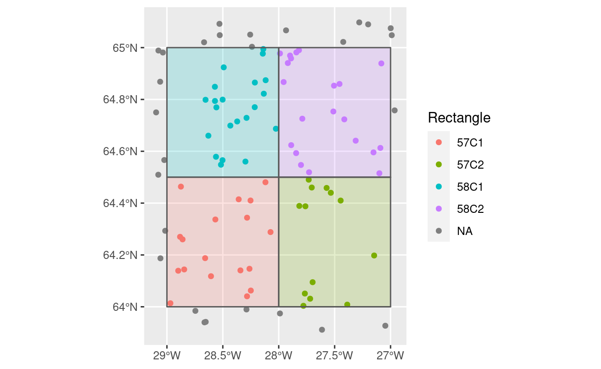
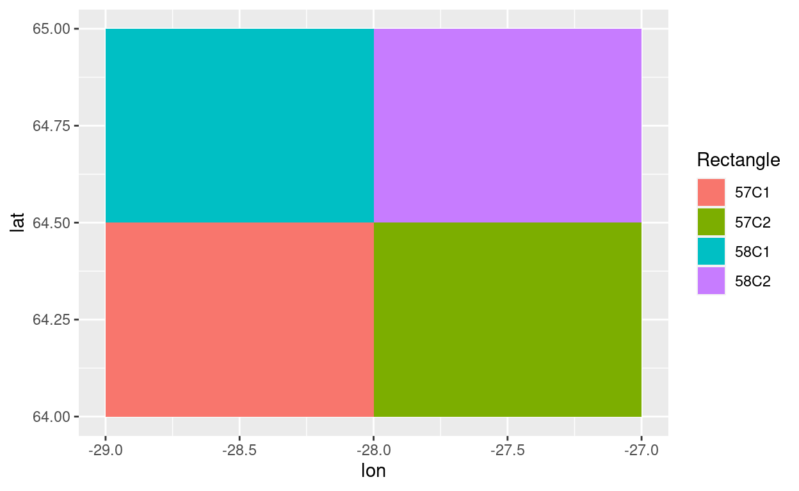
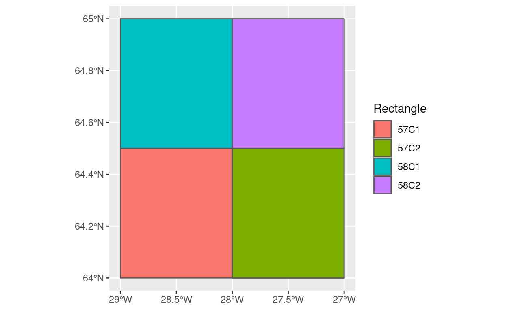

Lets say we have some spatial areas (polygons) and then some spatial data points. And we are interested to find the area that each point falls into. An example could be finding the ICES statistical rectangles that a set of fishing operations fall under. This problem has been solved many times, this post is only a memo to oneself how this is done using functions in the sf-package using the tidyverse approach. The “geoinside” in the title is a reference to a function in the geo-packages, where such a solution has been available for over two decades, at least to some “insiders”.
library(sf)
library(tidyverse)Lets start with from scatch creating some 4 rectangle polygons and then a bunch of coordinates representing e.g. fishing haul location which we want to “assign” to each of the four rectangles. More details are provided below, but the final code-flow would be something like:
# Generate the 4 rectangles:
icesr <-
data_frame(Rectangle = c(rep("58C2", 5), rep("58C1", 5), rep("57C2", 5), rep("57C1", 5)),
lon = c( -28, -28, -27, -27, -28,
-29, -29, -28, -28, -27,
-28, -28, -27, -27, -28,
-29, -29, -28, -28, -27),
lat = c(64.5, 65.0, 65.0, 64.5, 64.5,
64.5, 65.0, 65.0, 64.5, 64.5,
64.0, 64.5, 64.5, 64.0, 64.0,
64.0, 64.5, 64.5, 64.0, 64.0)) %>%
# Generate simple feature POINTS
st_as_sf(coords = c("lon", "lat"),
crs = 4326) %>%
# Convert to sf MULTIPOINTS, "conditional" on variable Rectangle
group_by(Rectangle) %>%
summarise(do_union = FALSE) %>%
# Convert MULTIPOINTS to POLYGON
st_cast("POLYGON")
# Generate some random (fishing haul) location
n <- 100
set.seed(314)
haul_location <-
data_frame(tow = 1:n,
lon = runif(n, -29.1, -26.9),
lat = runif(n, 63.9, 65.1)) %>%
# here want to keep the lon and the lat as attributes
mutate(x = lon,
y = lat) %>%
st_as_sf(coords = c("x", "y"),
crs = 4326)
# Spatial joining
haul_location <-
haul_location %>%
st_join(icesr["Rectangle"])
# Visualize
ggplot() +
geom_point(data = haul_location, aes(lon, lat, colour = Rectangle)) +
geom_sf(data = icesr, alpha = 0.2, aes(fill = Rectangle)) +
scale_fill_discrete(guide = FALSE) +
labs(x = NULL, y = NULL)
# The final haul data:
haul_location
Simple feature collection with 100 features and 4 fields
geometry type: POINT
dimension: XY
bbox: xmin: -29.09662 ymin: 63.91149 xmax: -26.96332 ymax: 65.09733
epsg (SRID): 4326
proj4string: +proj=longlat +datum=WGS84 +no_defs
# A tibble: 100 x 5
tow lon lat geometry Rectangle
<int> <dbl> <dbl> <POINT [°]> <chr>
1 1 -28.9 64.3 (-28.88257 64.27) 57C1
2 2 -28.5 64.6 (-28.50275 64.56561) 58C1
3 3 -27.4 64.7 (-27.41364 64.72319) 58C2
4 4 -28.6 64.1 (-28.60579 64.11797) 57C1
5 5 -28.7 64.8 (-28.65462 64.79867) 58C1
6 6 -28.4 64.7 (-28.43283 64.69901) 58C1
7 7 -28.6 64.8 (-28.5702 64.79411) 58C1
8 8 -28.3 64.0 (-28.28353 64.04047) 57C1
9 9 -27.9 64.6 (-27.88862 64.62368) 58C2
10 10 -27.5 64.9 (-27.45648 64.85975) 58C2
# … with 90 more rowsI.e. we within the haul dataframe the added variable “Rectangle” that each haul falls under. Hauls that are not within any of the four rectangles will have a missing (NA) rectangle variable name.
If you want to know a little bit about the devil in detail, read on. If not skip the remainder of the post, it is really just a repeat of the stuff above.
Lets generate some data that we want in the end to represent some four spatial rectangle polygons (here specifially some four ICES statistical rectangles):
icesr <-
data_frame(Rectangle = c(rep("58C2", 5), rep("58C1", 5), rep("57C2", 5), rep("57C1", 5)),
lon = c( -28, -28, -27, -27, -28,
-29, -29, -28, -28, -27,
-28, -28, -27, -27, -28,
-29, -29, -28, -28, -27),
lat = c(64.5, 65.0, 65.0, 64.5, 64.5,
64.5, 65.0, 65.0, 64.5, 64.5,
64.0, 64.5, 64.5, 64.0, 64.0,
64.0, 64.5, 64.5, 64.0, 64.0))What we have is a data frame of 20 records with 5 coordinates per rectangle which represent the boundary of each rectangle.
icesr
# A tibble: 20 x 3
Rectangle lon lat
<chr> <dbl> <dbl>
1 58C2 -28 64.5
2 58C2 -28 65
3 58C2 -27 65
4 58C2 -27 64.5
5 58C2 -28 64.5
6 58C1 -29 64.5
7 58C1 -29 65
8 58C1 -28 65
9 58C1 -28 64.5
10 58C1 -27 64.5
11 57C2 -28 64
12 57C2 -28 64.5
13 57C2 -27 64.5
14 57C2 -27 64
15 57C2 -28 64
16 57C1 -29 64
17 57C1 -29 64.5
18 57C1 -28 64.5
19 57C1 -28 64
20 57C1 -27 64 The reason we have five points for each rectangle is that in order to create a proper spatial polygon (which could be of very irregular shape for that matter) one needs to “close the loop” by having the last coordinate the same as the first.
Before proceeding lets get a visual of the above via ggplot:
ggplot() +
geom_polygon(data = icesr, aes(lon, lat, fill = Rectangle))
Now to turn an R dataframe with coordinates into a spatial dataframe we need to specify what variables are the spatial coordinates and specify the coordinate reference system, this latter point has a lot of devil in the details which I suggest you ignore for now. Within the tidyverse-sf framework this can be achieved by using the sf-function ‘st_as_sf’ that converts an ordinary dataframe into a spatial simple-feature dataframe:
icesr <-
icesr %>%
st_as_sf(coords = c("lon", "lat"),
crs = 4326)
icesr
Simple feature collection with 20 features and 1 field
geometry type: POINT
dimension: XY
bbox: xmin: -29 ymin: 64 xmax: -27 ymax: 65
epsg (SRID): 4326
proj4string: +proj=longlat +datum=WGS84 +no_defs
# A tibble: 20 x 2
Rectangle geometry
<chr> <POINT [°]>
1 58C2 (-28 64.5)
2 58C2 (-28 65)
3 58C2 (-27 65)
4 58C2 (-27 64.5)
5 58C2 (-28 64.5)
6 58C1 (-29 64.5)
7 58C1 (-29 65)
8 58C1 (-28 65)
9 58C1 (-28 64.5)
10 58C1 (-27 64.5)
11 57C2 (-28 64)
12 57C2 (-28 64.5)
13 57C2 (-27 64.5)
14 57C2 (-27 64)
15 57C2 (-28 64)
16 57C1 (-29 64)
17 57C1 (-29 64.5)
18 57C1 (-28 64.5)
19 57C1 (-28 64)
20 57C1 (-27 64)Basically we have still an R dataframe with 20 records, but the variable lon(gitude) and lat(itude) has been “move into” a single variable called geometry, that falls under the standard of simple feature. In this case “POINT”. And then we have a bunch of “overhead” on the top. The whole “thing” is a bit of an add dataframe for anybody new to the sf-game, but those that want to dig deeper I highly recomend two free textbooks in different state of making:
The next step is to convert each of the five sf-POINTS defining each statistical rectangle into four separate sf-POLYGON. Within the tidyverse environment we first aggregate the five points of each rectangle:
icesr <-
icesr %>%
group_by(Rectangle) %>%
summarise(do_union = FALSE)
icesr
Simple feature collection with 4 features and 1 field
geometry type: MULTIPOINT
dimension: XY
bbox: xmin: -29 ymin: 64 xmax: -27 ymax: 65
epsg (SRID): 4326
proj4string: +proj=longlat +datum=WGS84 +no_defs
# A tibble: 4 x 2
Rectangle geometry
* <chr> <MULTIPOINT [°]>
1 57C1 ((-29 64), (-29 64.5), (-28 64.5), (-28 64), (-27 64))
2 57C2 ((-28 64), (-28 64.5), (-27 64.5), (-27 64), (-28 64))
3 58C1 ((-29 64.5), (-29 65), (-28 65), (-28 64.5), (-27 64.5))
4 58C2 ((-28 64.5), (-28 65), (-27 65), (-27 64.5), (-28 64.5))Hmmm, this is a strange brew. The bottom line is that we have converted a dataframe of 20 records to only four records, one for each (ICES statistical) rectangle, with the five coordinates of each rectangle bundled into a single MULTIPOINT element.
In the final step we turn the multipoint to polygon using the ‘st-cast’ function:
icesr <-
icesr %>%
st_cast("POLYGON")
icesr
Simple feature collection with 4 features and 1 field
geometry type: POLYGON
dimension: XY
bbox: xmin: -29 ymin: 64 xmax: -27 ymax: 65
epsg (SRID): 4326
proj4string: +proj=longlat +datum=WGS84 +no_defs
# A tibble: 4 x 2
Rectangle geometry
* <chr> <POLYGON [°]>
1 57C1 ((-29 64, -29 64.5, -28 64.5, -28 64, -27 64, -29 64))
2 57C2 ((-28 64, -28 64.5, -27 64.5, -27 64, -28 64))
3 58C1 ((-29 64.5, -29 65, -28 65, -28 64.5, -27 64.5, -29 64.5))
4 58C2 ((-28 64.5, -28 65, -27 65, -27 64.5, -28 64.5))Visually we have:
ggplot() +
geom_sf(data = icesr, aes(fill = Rectangle))
Here we basically generate a set of some random spatial points conditional on spanning a slightly larger spatial range than the four rectangles generated above.
n <- 100
set.seed(314)
haul_location <-
data_frame(tow = 1:n,
lon = runif(n, -29.1, -26.9),
lat = runif(n, 63.9, 65.1)) %>%
mutate(x = lon,
y = lat) %>%
st_as_sf(coords = c("x", "y"),
crs = 4326)
haul_location
Simple feature collection with 100 features and 3 fields
geometry type: POINT
dimension: XY
bbox: xmin: -29.09662 ymin: 63.91149 xmax: -26.96332 ymax: 65.09733
epsg (SRID): 4326
proj4string: +proj=longlat +datum=WGS84 +no_defs
# A tibble: 100 x 4
tow lon lat geometry
<int> <dbl> <dbl> <POINT [°]>
1 1 -28.9 64.3 (-28.88257 64.27)
2 2 -28.5 64.6 (-28.50275 64.56561)
3 3 -27.4 64.7 (-27.41364 64.72319)
4 4 -28.6 64.1 (-28.60579 64.11797)
5 5 -28.7 64.8 (-28.65462 64.79867)
6 6 -28.4 64.7 (-28.43283 64.69901)
7 7 -28.6 64.8 (-28.5702 64.79411)
8 8 -28.3 64.0 (-28.28353 64.04047)
9 9 -27.9 64.6 (-27.88862 64.62368)
10 10 -27.5 64.9 (-27.45648 64.85975)
# … with 90 more rowsThose familiar with the tidyverse lingo have probably used the ***_join sweep of functions that combines separate data frames based on some shared ‘linking’ variable(s), usually resulting one of the dataframe containing additional variable from the other dataframe. Spatial joining involves the same concept but uses the spatial data as the ‘linking’ variable.
In our case we are interested in adding the variable “Rectangle” from the icesr-dataframe to the haul-dataframe, where spatial object in the former is a polygon while in the latter we have spatial points. This final step is achieved by using the st_join function:
haul_location <-
haul_location %>%
st_join(icesr["Rectangle"])
haul_location
Simple feature collection with 100 features and 4 fields
geometry type: POINT
dimension: XY
bbox: xmin: -29.09662 ymin: 63.91149 xmax: -26.96332 ymax: 65.09733
epsg (SRID): 4326
proj4string: +proj=longlat +datum=WGS84 +no_defs
# A tibble: 100 x 5
tow lon lat geometry Rectangle
<int> <dbl> <dbl> <POINT [°]> <chr>
1 1 -28.9 64.3 (-28.88257 64.27) 57C1
2 2 -28.5 64.6 (-28.50275 64.56561) 58C1
3 3 -27.4 64.7 (-27.41364 64.72319) 58C2
4 4 -28.6 64.1 (-28.60579 64.11797) 57C1
5 5 -28.7 64.8 (-28.65462 64.79867) 58C1
6 6 -28.4 64.7 (-28.43283 64.69901) 58C1
7 7 -28.6 64.8 (-28.5702 64.79411) 58C1
8 8 -28.3 64.0 (-28.28353 64.04047) 57C1
9 9 -27.9 64.6 (-27.88862 64.62368) 58C2
10 10 -27.5 64.9 (-27.45648 64.85975) 58C2
# … with 90 more rowsFor attribution, please cite this work as
Hjörleifsson (2019, Jan. 17). Splatter: Geoinside: Points in polygons via sf. Retrieved from https://splatter.netlify.com/posts/2019-01-17-geoinside-points-in-polygons-via-sf/
BibTeX citation
@misc{hjörleifsson2019geoinside:,
author = {Hjörleifsson, Einar},
title = {Splatter: Geoinside: Points in polygons via sf},
url = {https://splatter.netlify.com/posts/2019-01-17-geoinside-points-in-polygons-via-sf/},
year = {2019}
}